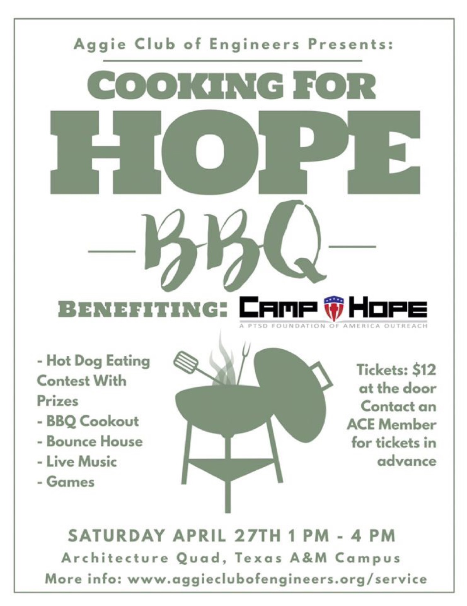

Sponsors
If you are interested in becoming a sponsor for Cooking for Hope 2019, please click
here for our sponsorship packet,
which contains information about the different levels of sponsorship for this event.
About Cooking For Hope
Cooking For Hope 2019 is a barbecue cookout that will include a barbecue lunch, live music, inflatable games, and competitions. Featuring live performances from A&M’s acapella group, Apotheosis, along with Hayden Upchurch and J. Vincent, Cooking For Hope will include a hot dog eating competition and corn hole tournament with different prizes! Cooking For Hope 2019 will be on April 27th, 2019 at the TAMU East Quad behind Langford Architecture. Please come back to this page, or check out our Facebook event, to get updates about Cooking for Hope 2019.

About Camp Hope
From it’s inception, ACE has been committed to giving back to the local community. Over the years, we have supported various
charities in the College Station/Bryan area including Camp Kesem, Bryan’s Food Bank, and most recently – Camp Hope.
Camp Hope is a foundation which helps connect combat veterans to vital resources they need to deal with the transition back to
civilian life. These resources include peer support and mentoring for those suffering from the effects of PTSD,
interim housing, and above all, a support group of peers and professionals who understand the real impact combat can have on one person. If you would
like to learn more about or get in contact with this excellent charity, please visit PTSD USA's website.